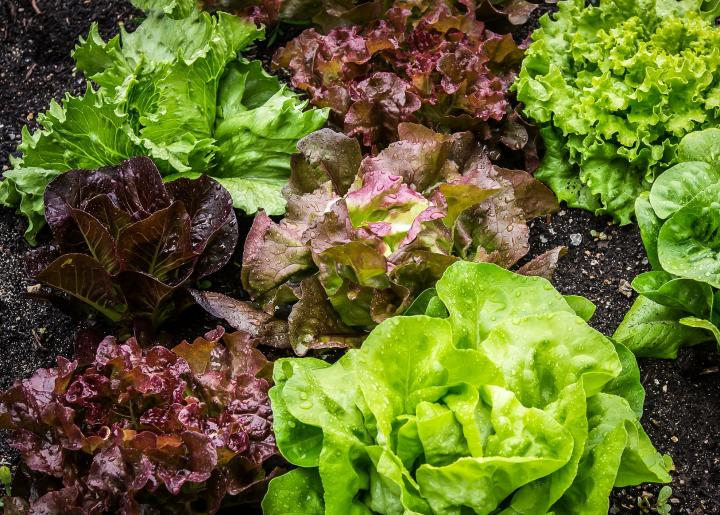

ABOUT US
Since 2010, Agro Grow has spoken to all walks of life: tide tables for those who live near the ocean; sunrise and planting charts for those who live on the farm; recipes for those who live in the kitchen; and forecasts for those who don’t like the question of weather left up in the air. Now we are educating
the community on how to grow vegetables successfully.
Our operation is based in Johannesburg, South Africa. The words of Agri Grow founder, Pieter Visser :
“Our main endeavour is to be useful, but with a pleasant degree of humor.”
Who visits our site?
Our readership spans the generations: Slightly more of it is women. Readers range in age from 9 to 90. Fifty-eight percent of them live on an acre or less, which is to say that they live in the suburbs (and are small-space gardeners); the remainder are mostly farmers. They are, to a man (and woman), “information seekers”:
New Ideas?
If you have a story idea, please mail your query/ies to Agri Grow, P. O. Box 520, Johannesburg, 2197, and include a self-addressed, stamped envelope if you would like a response. If you have been published (especially in the proposed topic area) provide a sample of clips in hard copy.
Alternatively, email us at ideas@agrigrow.co.za
Thank you for your interest in Agri Grow.
